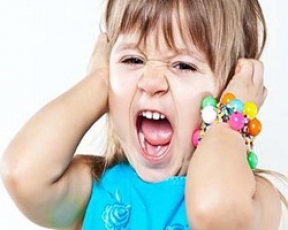

Одно родители должны помнить всегда: малыши капризничают не потому, что они хотят рассердить своих мам и пап или достичь определенную цель. Они просто не могут унять свое упрямство. Это выше их сил.
Ребенок упрямится, так как высшие силы и необязательно родители перечеркивают его планы. Он в замешательстве и не готов к такой ситуации.
Во время приступа упрямства у детей вырабатывается большое количество адреналина – гормона вызывающего стресс. И тут они показывают невероятную силу, бросаются на пол, брыкаются ногами, размахивают руками. Но чаше всего кричат, пока у них не перехватит дыхание. А отдышавшись, продолжают все по-новому.
Если приступ упрямства протекает особенно бурно, тогда малыши стучат головой о стену или пол. А некоторые из них даже задерживают дыхание пока не упадут в обморок. Понятно, что, увидев такое, родителям становится не по себе, они пугаются.
Но все это не так страшно как может показаться. Дыхание восстанавливается вновь, прежде чем станет критическим. Во время приступа упрямства дети плохо слышат и видят, не переносят, если в этот момент их трогают руками. Ониполностью не владеют собой.
Предугадать, когда произойдет вспышка упрямства, возможно не всегда, так как родители не могут знать всех планов своих детей. Самая лучшая тактика – это предоставить вашему ребенку как можно больше физической и духовной свободы. Так ли уж плохо, если во время субботней прогулки ваш малыш с удовольствием шлепает по луже или занят поиском корешков в земле.
Приступа упрямства у детей иногда можно избежать с самого начала. Они очень не любят, когда их прерывают во время игры.
Досадно, когда мать, как нарочно, зовет есть, когда ее малыш занят игрой. Или когда отец говорит своей дочери, что пора идти домой, в тот самый момент, когда песочная крепость почти завершена.